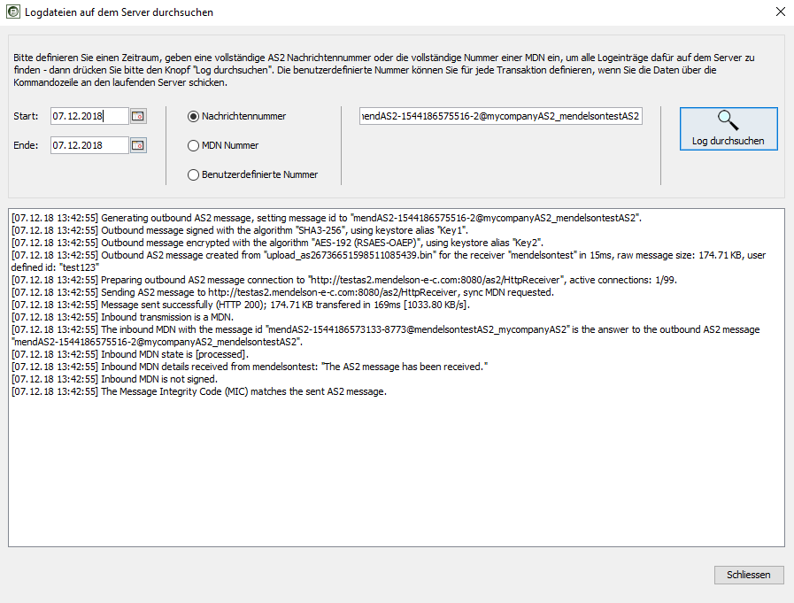
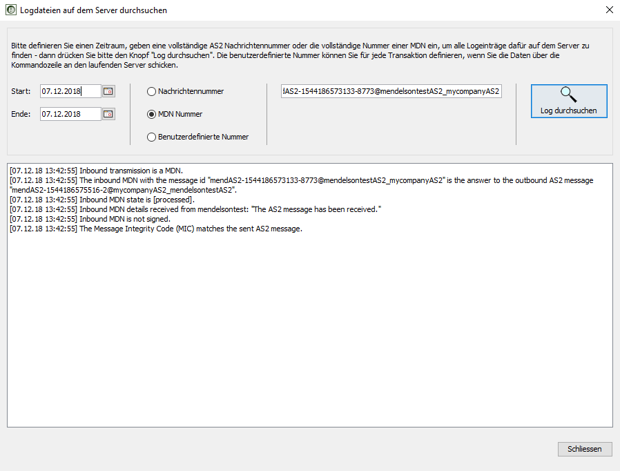
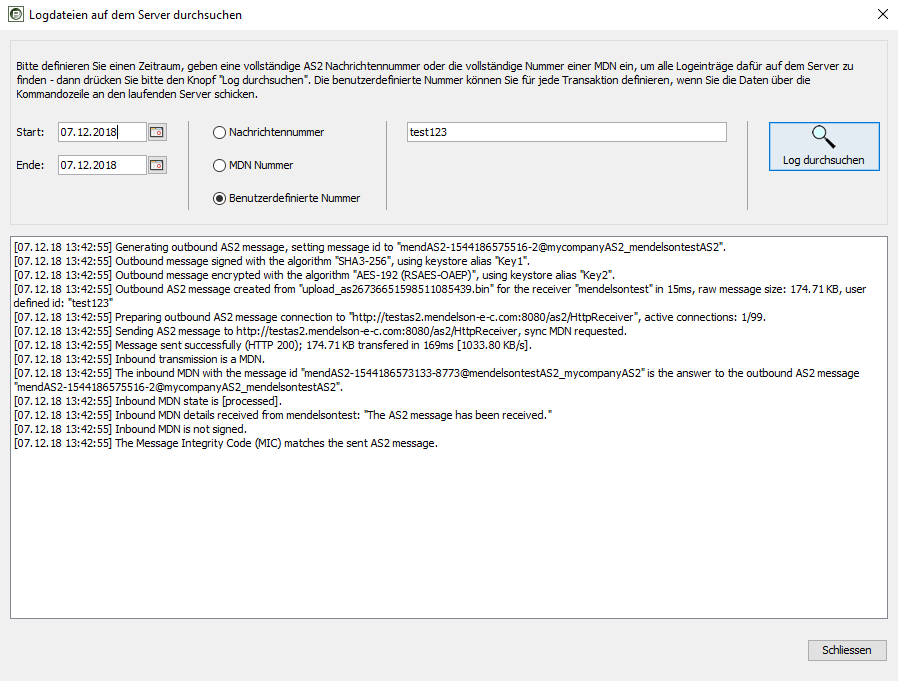

Der mendelson AS2 Server schreibt für alle Aktivitäten ein Log. Hierbei gibt es unterschiedliche Ziele für das Logging.
Die an einen mendelson AS2 Server angeschlossenen Clients werden über einen Pushmechanismus mit der Information über die aktuellen Aktivitäten versorgt. Dies läuft über TCP/IP und versorgt somit auch Clients, die auf anderen Rechnern laufen als dem AS2 Server Host. Der Pushmechanismus läuft mit geringer Priorität, es kann durchaus zu zeitlichen Verschiebungen bei der Anzeige der Logs im Logfenster des Clients kommen, wenn die Serverlast hoch ist.
Serverseitig schreibt der Server alle Aktivitäten in Logdateien. Diese finden Sie (nach Tagesdatum unterteilt) in den Dateien "log/ccyymmdd/as2.log". Jede Transaktion wird datenbankseitig ausserdem mit den entsprechd dazugehörigen Aktivitäten versogt, sodass jeder Client später detaillierte Loginformationen zu einzelnen Transaktionen abfragen kann.
Übersicht: Transaktionslog
Jede Operation des AS2 Servers wird in einem Log festgehalten.
Für jede Nachricht gibt es in der Übersichtsanzeige des AS2 Clients einen Eintrag, der
den aktuellen Status und die Richtung beinhaltet. Dabei werden folgende Icon
verwendet:
| Eingehende Nachricht (Initialrichtung) | |
| Ausgehende Nachrichte (Initialrichtung) | |
| Kommunikation wurde erfolgreich beendet | |
| Nachricht im Wartezustand, es fehlt noch eine MDN (Empfangsbestätigung) zur Vervollständigung | |
| Nachrichtenübertragung wurde fehlerhaft beendet |
Log der einzelnen Nachrichten
Jede Nachricht besteht aus einer Nachricht und einer Empfangsbestätigung. Wenn man sich die Details einer Nachrichtenübertragung anschaut, werden folgende Icons benutzt:
| Eingehende Nachricht oder eingehende Empfangsbestätigung | |
| Ausgehende Nachricht oder ausgehende MDN | |
| AS2 Nachricht | |
| MDN (Fehlerfreie Verarbeitung auf Gegenseite) | |
| MDN (Verarbeitungsfehler auf Gegenseite) |
Für jede Nachricht wird gespeichert, welche Operationen durchgeführt wurden. Ausserdem sind in der GUI die Rohnachrichten für alle Anfragen und entsprechenden Antworten einsehbar.
Jeder HTTP Zugriff auf den mendelson AS2 wird geloggt, Sie finden das Log im Logverzeichnis, in der Datei "CCYY_MM_DD.httprequest.log". Das Log Format ist das "NCSA Common log format", sofass Sie diese Daten auch mit Web-Analysesoftware weiterverarbeiten können.
Um diesen Logging-Mechnismus auszuschalten, bearbeiten Sie bitte die Datei jetty<n>/etc/jetty.xml, hier kommentieren Sie bitte den Abschnitt aus, der als request section gekennzeichnet ist.
Jeder Einlogvorgang eines Clients (Benutzeroberfläche) in den mendelson AS2 Server wird geloggt. Sie finden die Logdateien im Logverzeichnis unter den Namen "client_server_session_0.log", "client_server_session_1.log" and "client_server_session_2.log". Dies ist ein rotierendes Log - wenn das jüngste Log die Dateigröße von 1MB überschreitet, wird das älteste gelöscht und ein neues Log gestartet.
Der mendelson AS2 Server schreibt alle Loginformationen, die Sie im Client
in der Console sehen, auch in Logdateien. Diese sind nach Datum sortiert und
befinden sich im Verzeichnis "log/YYYYMMDD". Die Logdateien können
Sie sich als Textdatei in einem Editor anschauen und auch durchsuchen. Dabei
beinhaltet jede Zeile Zusatzinformationen über die Zeit, die Nummer der
Übertragung (so vorhanden) und die jeweilige Session (so vorhanden).
Mit Hilfe des Clients können Sie diese Dateien auch nach bestimmten Übertragungen
durchsuchen. Falls also Ihr Partner eine Frage zum Ablauf einer älteren
Transaktion hat, die sich nicht mehr in Ihrer Transaktionsübersicht befindet,
können Sie so Auskunft geben. Die jeweiligen Übertragungsdaten sind
dann aber zu diesem Zeitpunkt wahrscheinlich nicht mehr verfügbar. Die
Serverlogs sind jeweils so lange verfügbar, bis Sie manuell das entsprechende
Verzeichnis "log/YYYYMMDD" löschen. Hierbei stellt das Löschen
kein Problem für die Suchindicies dar - diese befinden sich pro Tag jeweils
im Unterverzeichnis "log/YYYYMMDD/index" und können jederzeit
gelöscht werden.

Um nach den Daten einer Übertragung zu suchen, geben Sie bitte die eindeutige Nachrichtenummer ein und drücken den "Log durchsuchen" Knopf.

Um die Log Daten einer bestimmten MDN einsehen zu können, geben Sie bitte in die Suchmaske die MDN Nachrichtennummer ein, selektieren als Suche "MDN Nummer" und drücken den "Log durchsuchen" Knopf.

Wenn Sie über die Kommandozeile einen Sendeauftrag an den mendelson AS2
aufgegeben haben, können Sie eine zusätzliche benutzerdefinierte Nummer
vergeben. Mit Hilfe dieser Nummer können Sie den Übertragungsverlauf
an vielen Stellen der Software nachvollziehen. Bitte geben Sie diese Nummer
vollständig in das Suchfeld ein und drücken "Log suchsuchen",
wenn Sie die Daten einer bestimmten Transaktion sehen wollen, die mit solch
einer Nummer verknüpft ist.
| Last modified: $Date: 12/10/22 14:13 $ |